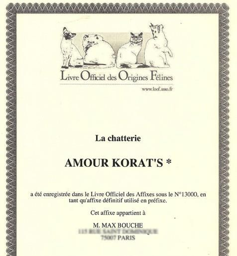
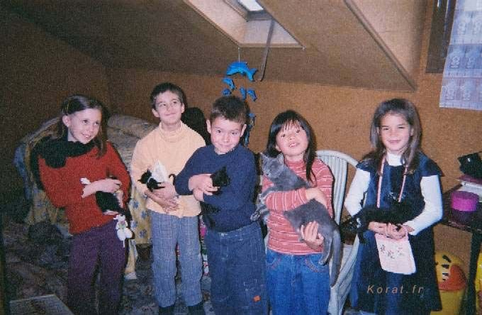

Origine, histoire de l'élevage

— Vous hésitez à vous faire plaisir à propos d'un Korat ?
Faites que le rêve dévore votre vie
afin que la vie ne dévore pas votre rêve.
[ Antoine de Saint-Exupéry ]
En cours d'écriture, mon histoire…
Automne 2001
Marie-Jade est une petite fille qui va avoir six ans. Elle voudrait un animal, plutôt un chat. Ça tombe bien, j'adore les chiens mais sur Paris, il pleut souvent et en promener un quotidiennement deviendrait vite une corvée. Les livres et tout le monde semblent pour une fois d'accord : posséder un chat responsabilise un enfant, lui donne confiance, lui apprend le respect de la vie et mille autres raisons que j'ai déjà oubliées !
Dans mon passé, j'ai eu à prendre en charge des animaux plusieurs fois mais jamais de pures races. J'ai toujours trouvé ça snob et puis pourquoi acheter un animal alors qu'il suffit d'aller dans un cimetière pour trouver beaucoup de chats abandonnés et ils sont gratuits. Seulement voilà, maintenant c'est pour un membre de ma famille. Pour créer un autre membre de la famille en fait. C'est parti pour des années.
S'il y a un cadeau qui reste et dont on se souvient toute sa vie, c'est un animal évidemment ! Alors je cherche le chat idéal. Quel animal lui conviendra le mieux ? À quel animal est-ce que je veux associer ma fille ? Quelle image je veux lui transmettre ? Est-ce que je veux un super chat mais alors il va falloir le payer ?..
La question de l'argent est vite réglée : j'aime trop ma fille pour faire des économies sur son cadeau et puis le prix d'un chat ramené à sa durée de vie, cela fait moins que le prix d'un paquet de cigarettes par mois alors moi qui viens d'arrêter de fumer, je peux m'engager à lui offrir cela… C'est décidé : je vais choisir un chat sans tenir compte de son prix mais uniquement celui qu'on préfère.
Je questionne les gens. Personne n'est d'accord sur le chat idéal. Certains me disent qu'acheter un chat de race, c'est mieux parce qu'il a tous les vaccins et garanties d'une parfaite santé. D'autres me disent que les chats de race sont plus fragiles que les autres. Et puis quelle race choisir ?
Pendant des mois, j'en fais un jeu de me renseigner sur les chats. Je sais maintenant plein de trucs sur les chats grâce à cette recherche.
Un jour, une amie présente son chat Sammy à ma fille comme elle sait qu'on en cherche un. C'est un pure race Korat. Il est petit, tout gris, très apaisant. Il a l'air d'un prince endormi. Dans la salle de bains, on a une petite statuette de chat égyptien, on s'exclame ensemble car il a exactement la même corpulence : - Il ressemble à Bastet ! Cela le réveille, ses yeux verts sont magnifiques. Il a l'air rassurant alors que les yeux jaunes font peur à Marie-Jade. Je dis à notre amie : - Il a l'air zen ton chat. Elle me répond : - C'est drôle : tout le monde me dit cela, c'est sa race.
Évidemment, Marie-Jade l'adore immédiatement. Elle aime tous les bébés chats et celui-là a l'air très jeune. Ils jouent ensemble tout l'après-midi et je dois reconnaître que c'est le premier chat que je vois ramener les petites peluches entre ses dents pour que ma fille lui relance ou encore venir aux pieds de sa maîtresse lorsqu'elle l'appelle et lui obéir à ce point. On est très impressionnés.
Notre amie nous explique que c'est une race très intelligente et malheureusement ce sont ces chats-là que l'on dresse pour les cirques et que leur vie alors ne doit pas être drôle. On apprend que Sammy est très vieux mais comme ces chats sont petits et qu'ils jouent toute leur vie, on croit toujours que ce sont de très jeunes chats. Elle nous explique que c'est une race asiatique et qu'ils sont tous beaucoup plus toniques que les chats européens quand il s'agit de jouer, c'est tout à fait normal.
Elle va partir une semaine. On se propose de s'en occuper immédiatement bien qu'on ne sache même pas ce qu'il aime manger. Mais elle préfère le laisser seul « garder » son appartement. Notre amie nous apprend que cette race s'alimente seule et qu'il faut juste laisser un gros paquet de croquettes de qualité pour qu'il prenne ce dont il a besoin. C'est pratique pour elle, équilibré pour Sammy et en plus économique ! Il faut simplement changer la litière de temps en temps sinon elle peut sentir mauvais et comme ces chats sont très propres, cela risquerait de le gêner. Cela me plait beaucoup car s'il suffit de s'occuper ainsi du chat, c'est facile pour ma fille et me convient très bien.
J'entreprends alors de me renseigner sur cette race mais c'est très difficile. Personne ne connaît ! Les vétérinaires me disent : - Oui, on a entendu parler de ces chats zen très intelligents, c'est une parmi quelques dizaines de races répertoriées, effectivement, mais on en a jamais vu. J'apprends que les chats pure race sont plus fragiles et vivent moins vieux que les autres car ils sont issus de croisements génétiques des deux derniers siècles. Tous sauf les Korats qui sont une race pure depuis toujours. C'est-à-dire qu'un aïeul Korat il y a mille ans était exactement le même que Sammy. Cette race pure est plus résistante que les autres chats et évidemment cela renforce mon envie d'en offrir un à ma fille !
Les Korats sont des chats qui vivent en Thaïlande dans la région nommée Korat, justement. Le roi et la reine en offraient aux jeunes mariés de la cour à l'origine. Ensuite, il fut d'usage d'en offrir aux fiancés à qui l'on souhaite un vrai bonheur, allez savoir pourquoi ? Ce chat zen porte-bonheur, c'est la seule race de chat fidèle à un maître et non à celui qui le nourrit. C'est pourquoi offrir un vrai Korat se fait toujours après une grande réflexion car si l'on veut le rendre heureux, il ne faut jamais s'en séparer définitivement. Toutes sortes de légendes existent autour de ce chat. Moi, ce que j'aime en lui, c'est qu'il ne perd pas de poils puisqu'il n'a pas de sous poils et est toujours très propre. Non pas que le brosser tous les jours et faire le ménage de ses poils me gênerait mais c'est très bien ainsi. C'est tout de même la seule race de chats acceptée par les personnes allergiques selon les allergologues ! Ceci associé au fait qu'il soit autonome pour sa nourriture me rassure : il restera toujours leste et souple et je ne serai pas embêté par des problèmes vétérinaires d'obésité…
Nous allons souvent voir Sammy. Marie-Jade lui a appris à jouer aux billes. C'est fou ce qu'il comprend vite ce chat.
Nous avons décidé d'en chercher un pour nous. Là, commence une recherche très difficile. J'ai d'abord trouvé des éleveurs me proposant des chats de race « bleue russe ». Mais cette race est une création biologique d'il y a quelques dizaines d'années qui ne possède pas les propriétés des Korats. Ensuite, on m'a proposé des Korats qui n'en étaient pas. Il y a beaucoup d'éleveurs, notamment à l'étranger qui vendent des Korats qui n'en sont pas. À force de nous renseigner, on a appris à les reconnaître ! Officiellement en France, après une longue enquête, il n'y a pas d'élevage de Korat malgré les publicités internet d'escrocs sur cette race. Cela commence à m'agacer au point que je me renseigne où il y en a ? J'apprends qu'il n'en est pratiquement jamais sorti de la région Korat de Thaïlande sauf depuis quelques dizaines d'années seulement par une américaine peu scrupuleuse des lois… Je me dis qu'un voyage en Thaïlande est l'occasion d'en ramener après tout ! À l'ambassade, on m'apprend que le Korat est une espèce protégée en voie de disparition. Non seulement il est interdit de passer une frontière avec un tel chat mais en plus je risque de finir en prison ! Les espèces en voie de disparition étant répertoriées mondialement. On va alors voir notre amie lui dire que son chat est illégal. Elle éclate de rire et nous donne un texte de loi. Il est écrit que pour de telles espèces protégées, il est possible de posséder de tels animaux rares mais il est en revanche interdit deux choses. Nous sommes très attentifs. D'une part, il est interdit tout croisement. Un chat Korat doit donc faire des bébés avec un autre chat Korat pour perpétuer l'espèce. D'autre part, le propriétaire d'un Korat doit posséder des papiers officiels de son chat, de tous ses parents et grands-parents prouvant de ce fait la race pure.
L'anniversaire de Marie-Jade va approcher et toujours pas de Korat en vue. J'ai envie d'abandonner, cela m'a l'air impossible d'en trouver un entre les faux éleveurs et les éventuels problèmes aux douanes françaises si on va à l'étranger en chercher un…
Finalement, l'anniversaire arrive avec une grande fête mais pas de Korat. Or nous voulions celui-là ou aucun autre animal.
Ensuite, l'année suivante, je cherche, j'économise une petite fortune et je ne vous dirai pas comment mais je possède un vrai Korat offert pour les sept ans de Marie-Jade. Le plus beau cadeau de tous ses anniversaires en effet ! Comme on est en 2002, c'est l'année des T pour les prénoms de chats et on décide de l'appeler « Tara verte » comme la Déesse Tibétaine mais cela, c'est une autre histoire.
L'histoire, celle-ci, ne s'arrête pas là.
Évidemment, les amis de ma fille viennent à la maison voir ce petit animal zen si attirant. Évidemment, chacun nous demande où se procurer un tel animal. Évidemment, « Tara verte » a fait une fugue… est revenue avec des petites graines en son ventre… Echographies, attentes, puis mise bas de quatre chatons. Non point gris mais si mignon ! Trois mois de délices, d'allégresse avec ces chatons… Voici une photo de la bande de l'époque, ma fille tenant « Tara Verte ».

Candide, je me revois dans la meilleure clinique vétérinaire parisienne dans laquelle j'avais pris mes habitudes depuis quatre mois avec mon petit papier ; "Quatre chatons croisés Korat à donner…"
La réponse me fit quitter le monde des bisounours - "… Vous n'y pensez pas… Vous avez fait plus pour vos chats que n'importe quel éleveur… Vous n'imaginez pas les trafics d'animaux… Vous refaites une annonce en les vendant… Nous ne serons pas complices du malheur de vos adorables chatons qui seraient exploités, revendus, traumatisés…"
À suivre…
Automne 2012
La suite ? Après une nouvelle annonce, quatre adoptants avec lesquels je suis toujours en contact, les premiers chats de « Tara verte » coulent des jours heureux aux dernières nouvelles, nous sommes aujourd'hui à l'automne 2012, onze ans plus tard.
Et puis depuis ce temps ?
Concourant à l'élaboration de deux thèses sur l'élevage félin, moult échanges avec des vétérinaires passionnés m'ont éclairé.
Membre fondateur du Korat Club de France, durant un mois en Thaïlande j'ai fait connaissance avec les membres du Thaïland Cat Club pour approfondir mes connaissances de la race.
Le LOOF m'a convié à contribuer au standard de la race. Là c'est à Pantin, moins loin d'où je réside !
Enfin et surtout je suis enrichi au quotidien par la sagesse, la force et la beauté des Korats qui partagent ma vie.
Aujourd'hui, après des années d'élevage, j'ai arrêté de participer à moult associations félines. Entre celles qui regroupent des éleveurs éloignés pour s'envoyer des « clients » ; celles qui, humain oh trop humain, veulent faire évoluer les races en sélectionnant les gènes, et celles qui « développent » la race en prônant la stérilisation systématique de pauvres chatons par peur de la concurrence, je n'y trouvais plus mon compte. Je produis toujours des portées de chatons d'exception, principalement adoptés par le bouche-à-oreille.
Nul besoin de chercher à plaire aux juges et influencer les canons de race du moment, mes chats ne subissent aucune exposition. Je suis toujours circonspect lorsque j'apprends qu'un de mes chatons est champion, sachant d'anciens éleveurs les maladies félines qu'on attrape forcément en exposition… Même si ça fait quand même plaisir de voir des éleveurs européens baser leur lignée sur des champions issus d'Amour Korat, je souhaite plutôt à chacun de mes chatons la vie de ses parents : ne pas disputer des prix mais passer sa vie au chaud à cocooner, et ne pas trop se reproduire car les chattes allaitant peu souvent sont en meilleure forme et amènent de meilleurs chatons. Quantité, qualité ?
Nul besoin de collaborer aux marques de pet-food. Mon principal fournisseur ne fait aucun partenariat ni vente par correspondance : c'est le boucher de mon quartier. Vous ne trouverez donc aucun lien sur ce site.
Tout au plus je collabore à une association parisienne qui regroupe quelques chercheurs, éleveurs et vétérinaires passionnés, parce qu'ils sont voisins et que produire des chats de race d'exception s'acquiert par la pratique et nullement en théorie par correspondance. Et au Korat Club de France parce que membre fondateur, je tiens à ce que ce club qui perdure ne perde pas son âme, à savoir ne pas faire de pub pour quelque élevage que ce soit, ni tomber dans les copier-coller classiques sur le Korat typique de ceux qui ne sont jamais allés les étudier en Thaïlande.
Une autre fille est née, Marie-Sarah, je me devais d'en parler dans un souci d'équité. À l'image de sa sœur elle se responsabilise en apprenant le respect d'autrui avec des Korats complices qui la passionnent évidemment. Une photo d'elle est visible en cliquant sur ce lien.
Concernant mon pedigree d'éleveur ?
Côté faiblesses, je suis peu compétent sur les maladies et problèmes félins n'y ayant jamais été confronté. Mais côté points forts, d'un naturel préventif, je suis expérimenté sur tout ce que l'on peut réaliser en prévention sur un chat !
En ce qui concerne mes arbitrages sur la lignée Amour Korat ? Deux critères orientent mes choix. D'une part, traditionaliste, je produis en petite quantité des Korats tels qu'ils étaient à l'origine, à contre-courant des élevages cherchant à modifier et influencer la race. D'autre part, je tente de produire des Korats peu allergènes. En effet, on trouve tout et son contraire sur ce sujet. Des personnes allergiques aux chats vivant bien avec un Korat issus de mon élevage m'ont apporté des connaissances sur les bons tests à faire et comment produire des Korats peu allergènes.
Voilà, j'ai tenté de parler un peu de l'éleveur d'Amour Korat. Il est important de se connaître en cas d'adoption d'un nouveau membre familial, humain ou Korat.
À suivre…
Se donner du mal pour les petites choses,
c'est parvenir aux grandes,
avec le temps.
[ Samuel Beckett ]